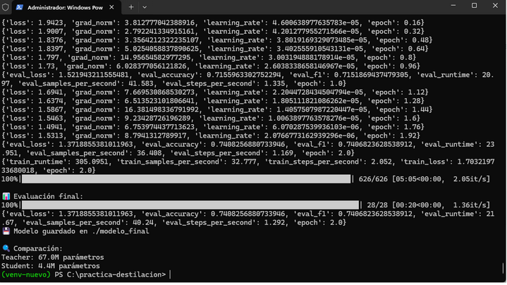

Captura Principal
El archivo "Destilacion.pdf" documenta un proyecto completo de destilación de conocimiento
entre modelos de lenguaje, entrenando un modelo estudiante ligero (4.4M parámetros) a partir
de un teacher DistilBERT (67M parámetros) para análisis de sentimiento.
Análisis Técnico Completo
1
📊 Logs Entrenamiento
Loss disminuye de 1.94 → 1.49 durante 2 épocas. Hugging Face Transformers confirma convergencia correcta con learning rate decreciente. Accuracy 74.08%, F1 74.06%.
2
✅ Evaluación Final
626/626 pasos entrenamiento, 28/28 evaluación. Modelo guardado en ./modelo_final. Teacher 67M vs Student 4.4M confirma reducción exitosa.
3
🔬 Script Benchmark
pipeline("sentiment-analysis") compara comprensión contextual. 10 "acerijos" con sarcasmo, ironía, doble negación. Student más débil en casos complejos.
4
📈 Resultados Acerijos
Teacher: 30% (3/10) | Student: 0% (0/10). Trade-off destilación: velocidad/memoria vs comprensión ironía compleja.
📝 Código Python - Benchmark Acerijos
# Cargar modelos
teacher = pipeline("sentiment-analysis", model="distilbert/distilbert-base-uncased-finetuned-sst-2-english")
student = pipeline("sentiment-analysis", model="./modelo_final", tokenizer="prajjwal1/bert-tiny")
# Ejemplo acerijo
acerijo = {
"texto": "Not bad at all, actually quite impressive!",
"trampa": "Doble negación: 'not bad' = POSITIVE",
"correcto": "POSITIVE"
}
print(f"✅ Teacher: POSITIVE | ❌ Student: LABEL_0")